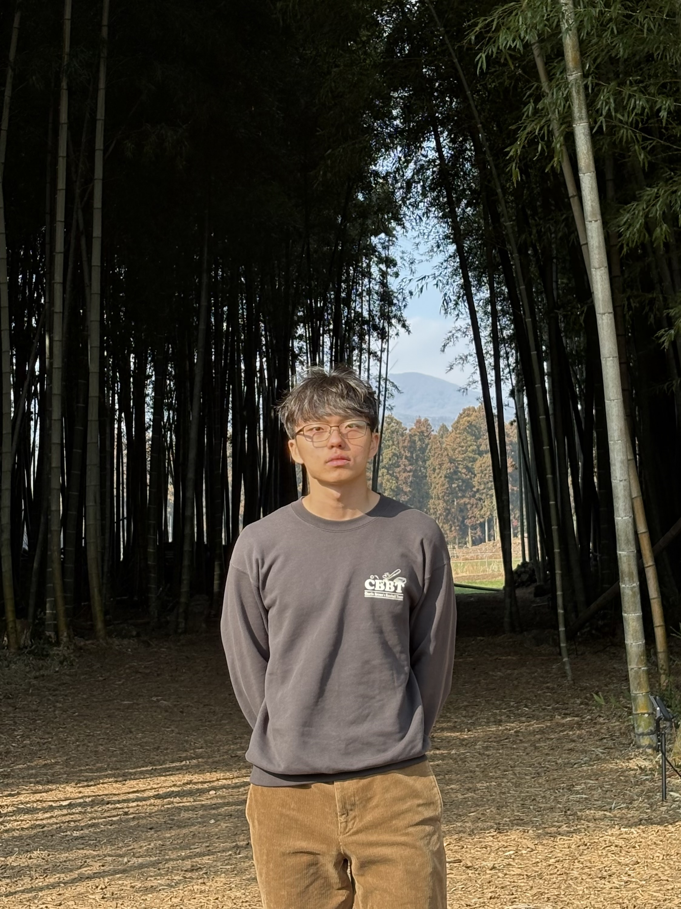

|
Jihun Moon
I am a master's student in Cognitive Science at Seoul National University, where I am advised by Prof. Youngjae Yu at the Physical Intelligence Lab. I received my B.S. in Mechanical Engineering from Seoul National University in August 2026.
My research interests lie in World Models, Long-Term Egocentric Experience, and Personalized AI.
I study how intelligence builds its own world model from accumulated experience — and how that experience should be organized — drawing computational hypotheses from human cognition.
Email /
CV
|

|
|
|
The Limits of Your World Model Mean the Limits of Your Language Model: Embodied Reasoning through a Predictive Action Boundary
Jihun Moon*, Yumin Park*, Hogun Park*, Youngjae Yu (* equal contribution)
Under review, 2026
[Paper]
We introduce EGO, a framework in which a VLM selects a task-appropriate action within a predictive action boundary proposed by a V-JEPA2-based world model — aligning language reasoning with action possibilities grounded in visual experience, and improving both single-step embodied reasoning and multi-step procedure anticipation on egocentric video.
|
|
|
SPREAD: Scalable Pre-trained World Model for Adaptive Dynamics Model
Jihun Moon, Seong-Woo Kim
IEEE Robotics and Automation Letters (RA-L), 2026
[Paper] [Project Video]
We introduce SPREAD, the first framework that enables a pre-trained world model to learn environmental changes online, and continuously.
|
Academic & Extracurricular Activities
|
|
|
SHAPE (SNU Humanoid & Physical AI Club)
Founder & President, 2025 - 2026.07
[Website]
Established Seoul National University's first student organization dedicated to humanoid robotics and physical AI as a founding president, leading the club's participation in the Humanoid Challenge held in June 2026.
|
|
|
Roboticus (KAIST × SNU Robotics Community)
Founding Organizing Staff, 2026
[Website] [Press]
Co-founded Roboticus, a non-profit student organization jointly launched by robotics clubs of KAIST and Seoul National University (MR, SHAPE, SIGMA), and served on the organizing staff of the 1st Robot Hackathon (Aug 2026), a student-planned 100-hour physical AI hackathon at KAIST where ten student teams built working robots from scratch.
|
|
|
K-Robotics Startup Cup
Team Member, 2026
Participated in the K-Robotics Startup Cup, a robotics startup competition hosted by KAIST, developing and pitching robotics-based business ideas.
|
|
|
Maze Solving Manipulation
Course Project, 2025
[Project Video]
Implemented an A*-based path planner with a feedback trajectory tracking controller, achieving the top performance among all teams.
|
|
{kind=link}